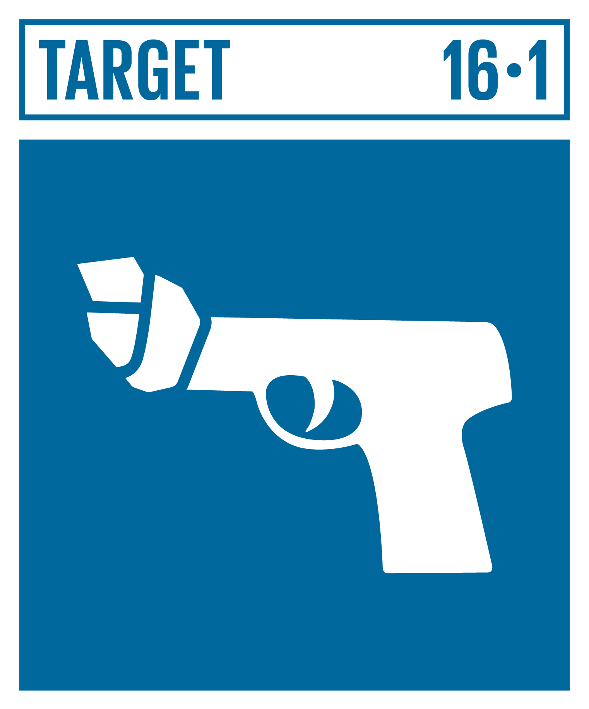
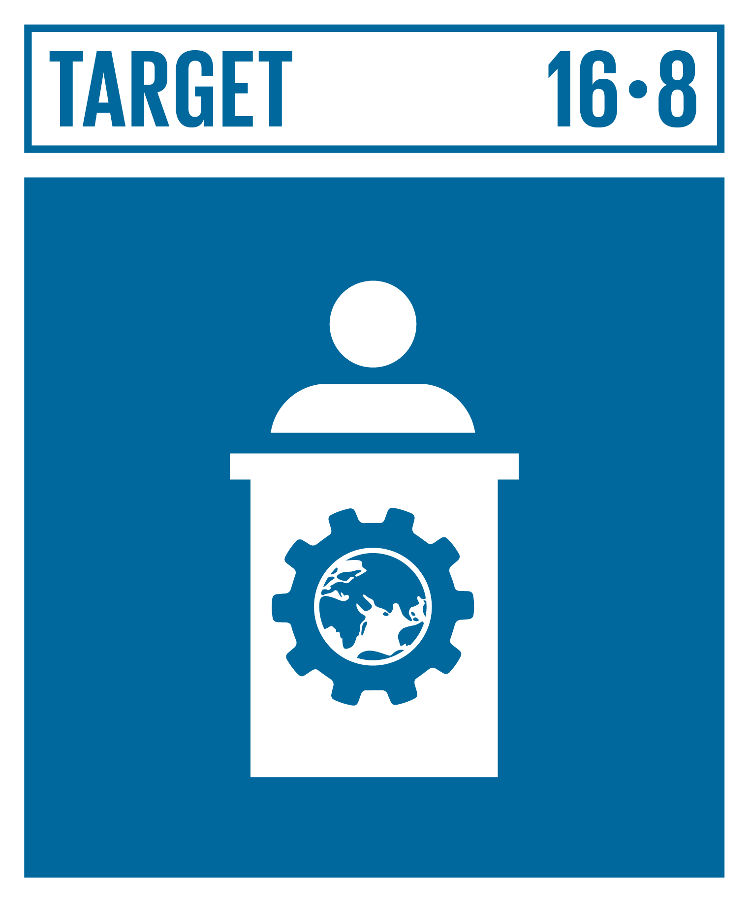
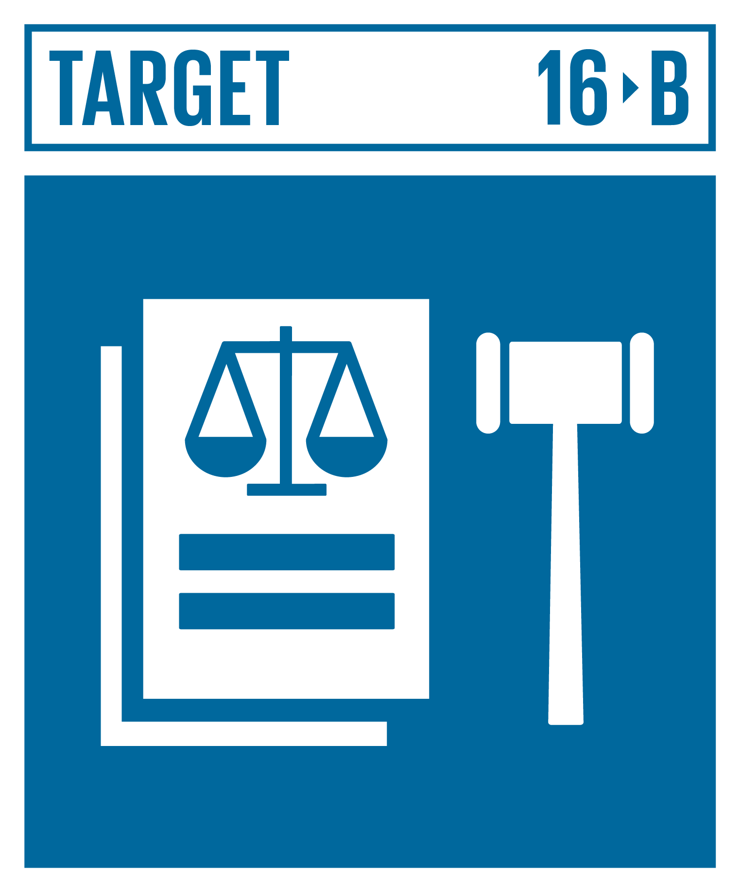

Tujuan:
Mempromosikan masyarakat yang damai dan inklusif untuk pembangunan berkelanjutan menyediakan akses keadilan bagi semua orang dan membangun lembaga yang efektif, bertanggung jawab, dan inklusif di semua tingkatan.
SDGs ke 16 ini memiliki banyak tujuan/target yaitu:


16.1
Mengurangi Kekerasan di Mana Saja:
Mengurangi secara signifikan segala bentuk kekerasan dan angka kematian terkait di mana-mana.
16.2
Lindungi Anak dari Kekerasan, Eksploitasi, Perdagangan Manusia dan Kekerasan:
Akhiri pelecehan, eksploitasi, perdagangan manusia, dan segala bentuk kekerasan dan penyiksaan terhadap anak.
16.3
Mendorong Penegakan Hukum dan Memastikan Akses yang Setara terhadap Keadilan:
Mempromosikan supremasi hukum di tingkat nasional dan internasional dan memastikan akses yang sama terhadap keadilan bagi semua.
16.4
strengthen recovery and return of stolen assets, and combat all forms of organized crime:
Memerangi kejahatan terorganisir dan aliran keuangan dan senjata terlarang
16.5
Mengurangi korupsi dan penyuapan dalam segala bentuknya:
Peningkatan efektivitas pencegahan dan penghapusan korupsi
16.6
Mengembangkan Lembaga yang Efektif, Akuntabel, dan Transparan:
Mengembangkan lembaga yang efektif, bertanggung jawab, dan transparan di semua tingkatan.
16.7
Memastikan pengambilan keputusan yang responsif, inklusif dan representatif:
Memastikan pengambilan keputusan yang responsif, inklusif, partisipatif, dan representatif di semua tingkatan.
16.8
Memperkuat Partisipasi dalam Tata Kelola Global:
Memperluas dan memperkuat partisipasi negara-negara berkembang dalam lembaga tata kelola global.
16.9
Memberikan Identitas Hukum Universal:
Pada tahun 2030, menyediakan identitas hukum untuk semua, termasuk pencatatan kelahiran.
16.10
Memastikan Akses Publik terhadap Informasi dan Melindungi Kebebasan Fundamental:
Memastikan akses publik terhadap informasi dan melindungi kebebasan mendasar, sesuai dengan undang-undang nasional dan perjanjian internasional.
16.A
Memperkuat Lembaga Nasional untuk Mencegah Kekerasan dan Memerangi Terorisme dan Kejahatan:
Memperkuat lembaga-lembaga nasional yang relevan, termasuk melalui kerja sama internasional, untuk membangun kapasitas di semua tingkatan, khususnya di negara-negara berkembang, guna mencegah kekerasan dan memerangi terorisme dan kejahatan.
16.B
Mempromosikan dan Menegakkan Hukum dan Kebijakan yang Tidak Diskriminatif:
Mempromosikan dan menegakkan hukum dan kebijakan non-diskriminatif untuk pembangunan berkelanjutan.
Masalah yang berkaitan:
Masalah perdamaian, keadilan, dan kelembagaan yang kuat seringkali melampaui batas negara. Untuk mengatasi masalah ini secara efektif, diperlukan upaya bersama dalam skala yang lebih luas, baik di tingkat bilateral maupun regional. Kerja sama memungkinkan negara-negara untuk berbagi sumber daya, keahlian, dan teknologi. Dengan demikian, upaya untuk mencapai Tujuan 16 dapat dilakukan secara lebih efisien dan efektif.
Tindakan yang dilakukan oleh satu negara dapat berdampak pada negara lain di wilayah yang sama. Kerja sama regional memungkinkan negara-negara untuk mengkoordinasikan kebijakan dan tindakan mereka untuk mencapai tujuan bersama.